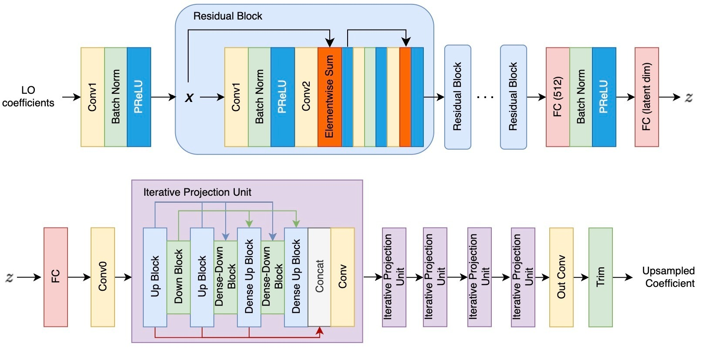

About
×

Selected Publications and Manuscripts
3D Vision

Animal World: A Cross-Species Dataset for Social Animal Pose Understanding
arXiv
SAM 3D Animal: Promptable Animal 3D Reconstruction from Images in the Wild
arXiv
Spatial Audio

HRTFformer: A Spatially-Aware Transformer for Individual HRTF Upsampling in Immersive Audio Rendering
IEEE TMM 2026

Head-Related Transfer Function Upsampling Using an Autoencoder-Based Generative Adversarial Network with Evaluation Framework
JAES 2025

A Machine Learning Approach for Denoising and Upsampling HRTFs
EUSIPCO 2025

HRTF Spatial Upsampling in the Spherical Harmonics Domain Employing a Generative Adversarial Network
DAFx 2024
Oral Presentation
AR/VR for Brain Stimulation

A Multi-Camera Optical Tag Neuronavigation and AR Augmentation Framework for Non-Invasive Brain Stimulation
arXiv

Optical Tag-Based Neuronavigation and Augmentation System for Non-Invasive Brain Stimulation
IEEE VRW 2026
Computer Vision for Crowd Counting

Uniformity in heterogeneity: Diving deep into count interval partition for crowd counting
ICCV 2021